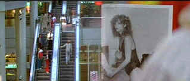

| Blow
Out/B+,C- |
| MGM/1981/108/ANA 1.85, PS 1.33 |
Let's get this over with quickly: Blow Out looks
pretty lousy. The focus is soft throughout. Colors are not sufficiently saturated. Overall, this
looks like its been transferred from regurgitated source material. Shame on someone!.
Blow Out may be Brian De Palma's most successful thriller. The key
to the success of the film, much like The Conversation and
Blow Up, films which evidentially inspired De Palma, is center of focus is rock solid on
main character Jack Terri's profession as a sound editor. The plot, the characters, everything is subservient
to the profession.
When Jack Terri starts repeating his sound effects a bit too much for his
producer at a schlock movie studio, the sound specialist takes his tools to a midnight bridge to
catch the wind and the rustling leaves. Using his telescopically sensitive pick-up mike like a
conductor shaping a symphony, Jack records a bit more than just the wind. Like the whirlpool
created when a massive object sinks int he water, Jack is pulled in to a mystery through the sounds
on the night.
 |
| De Palma escalator fascination on
view. ©MGM |
Typical De Palma visual flourishes are exercised to maximum effect in Blow
Out. The peripatetic point-of-view camera stalks its victims with the intensity of a
professional assassin. The bridge sequence is a beautifully staged blending of sound and visual
stylization edited with beautiful precision. Slick editing is a must in a film about an editor. De
Palma is more than up to the task. Blow Out moves at a snappy clip and the wind-up is a
accelerates like a race car gunning to the wire..
Paul Sylbert's production design is natural and Pino Donaggio's pulsing
electronic score echoes the subject matter. Vilmos Zsigmond's cinematography delivers all the De
Palma signature visual flourishes.
John Travolta is excellent as Terri. Travolta's energy gives Terri the strength
to seek the truth. It's a puzzle he feels compelled to solve. Would Terri have felt the same had he
witnessed the event through some other way than his profession? Nancy Allen is hilarious as the
bimbo. But it doesn't dull the suspense. John Lithgow knows his villains well. Lithgow
dispatches victims with icy dispatch.
The mushy image and loss of detail don't prevent you from enjoying Blow
Out, but they do diminish the pleasure. Clarity of sound is of paramount importance and at
least the mono sound is clean and effective.
|
|
|
|

Selections from the Feature Archive
include articles on Akira Kurosawa, Frank
Darabont, Blonde Bimbos, Hollywood Street Gangs, or Vietnam: The
Hollywood Pariah, and many more....

Click on the image of The Heistmasters for an interesting feature on the tough guys that
pull off the big jobs.

A larger than life screen
presence brought joy to audiences for six decades. Anthony Quinn had a
rare zest for life that was invested in many of his roles. Long live his memory. Click on the image
for a look at his career.

 Have you visited Home Theater
Talk lately? One of the friendliest places on the Net for Home Theater and DVD discussion, you
can get help for installation problems or simply share your opinions with other Vidiots. Have you visited Home Theater
Talk lately? One of the friendliest places on the Net for Home Theater and DVD discussion, you
can get help for installation problems or simply share your opinions with other Vidiots.
 Brad Lang continues to add more interesting material to the extensive
collection at Classic
Movies. Everything from actors and actress to your favorite directors is
linked at the site. Brad Lang continues to add more interesting material to the extensive
collection at Classic
Movies. Everything from actors and actress to your favorite directors is
linked at the site.

Comprehensive DVD review database. Easy to use
interface with specific region searches.
 The online site for Film Comment Magazine
includes all the information you need to know about cinematic events sponsored by the Film Society
of Lincoln Center. The online site for Film Comment Magazine
includes all the information you need to know about cinematic events sponsored by the Film Society
of Lincoln Center.
|